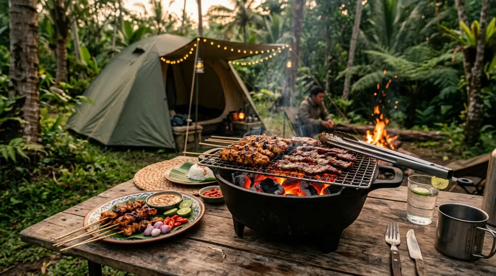

Paket glamping keluarga all-in menghapus semua kerumitan liburan — kamu hanya perlu datang dan menikmati.
Paket glamping keluarga all-in menghapus semua kerumitan liburan — kamu hanya perlu datang dan menikmati.
Pernahkah kamu menyadari betapa cepatnya anak-anak tumbuh besar, sementara kamu sibuk tenggelam dalam lautan email dan meeting Zoom yang seolah tidak ada habisnya? Tanpa terasa, akhir pekan selalu berlalu dengan skenario yang sama: kamu kelelahan di sofa, dan anak-anak sibuk dengan gadget mereka masing-masing.
Ada perasaan bersalah yang diam-diam menyelinap, bukan? Waktu terus berjalan, dan momen kebersamaan keluarga yang hangat perlahan tergantikan oleh rutinitas. Jangan sampai kamu baru menyadari pentingnya liburan keluarga ketika anak-anak sudah beranjak remaja dan lebih memilih hangout bersama teman-temannya daripada denganmu.
Jika alasan utama menunda liburan alam adalah membayangkan keribetan membawa barang segunung, cobalah riset seputar glamping harga paket keluarga. Kamu akan terkejut menemukan betapa praktisnya liburan saat ini, di mana sebuah paket lengkap sudah menyelesaikan semua keluhanmu.
Dalam dunia kerja, kita sering diperkenalkan dengan konsep efisiensi dan manajemen proyek. Jika ada vendor yang bisa memberikan layanan all-in-one dengan hasil maksimal, tentu kita akan lebih memilih opsi tersebut. Nah, pola pikir yang sama sangat relevan untuk diterapkan saat kamu merencanakan liburan keluarga. Beruntung, industri pariwisata saat ini sangat memahami kepenatan para pekerja keras sepertimu. Solusinya hadir dalam bentuk glamping (glamorous camping).
Mengapa "Harga Glamping" Sering Dianggap Mahal pada Pandangan Pertama?
Saat kamu pertama kali berselancar di internet dan mengecek harga glamping, angka yang tertera mungkin sekilas terlihat setara — atau bahkan lebih tinggi — dibandingkan menyewa kamar hotel berbintang. Reaksi refleks kita biasanya membandingkan wujud fisik: "Masa tidur di tenda harganya sama dengan tidur di kamar tembok ber-AC?"
Namun, membandingkan glamping dengan hotel adalah perbandingan yang tidak setara (apple to orange). Ketika kamu membayar kamar hotel, kamu murni membayar tempat tidur dan akses kolam renang. Namun, ketika kamu membayar paket glamping, kamu sedang membeli "pengalaman" yang sudah dikurasi.
Layaknya menyewa seorang Event Organizer (EO) untuk acara kantor, pihak pengelola glamping sudah menghitung biaya logistik, tenaga kerja untuk menyiapkan segalanya, serta kenyamanan di lokasi yang sulit dijangkau. Kamu tidak sekadar menyewa kasur, tapi menyewa peace of mind alias ketenangan pikiran.
Bedah Keuntungan Memilih Paket Glamping Keluarga All-In
1. Menghemat Biaya Siluman (Hidden Cost) Sewa Alat
Pernahkah kamu menghitung biaya hidden cost jika harus berkemah secara mandiri? Kamu harus menyewa tenda dome besar untuk keluarga, menyewa sleeping bag, matras, lampu tenda, kompor portable, hingga gas kaleng. Belum lagi jika ada alat yang rusak dan kamu harus menggantinya.
Dengan paket glamping, semua peralatan tempur itu tidak perlu kamu pikirkan. Tenda berkapasitas 4 orang yang kokoh, kasur busa tebal yang nyaman untuk tulang punggungmu yang pegal, bantal, selimut hangat, hingga penerangan estetik sudah berdiri manis menunggumu datang. Kamu hanya perlu membawa koper berisi pakaian ganti dan perlengkapan mandi pribadi.
2. Sarapan Pagi yang Praktis Tanpa Drama
Pagi hari di area pegunungan memang syahdu, tapi suhu dinginnya sering kali membuat siapa saja malas menyentuh air untuk mencuci bahan makanan. Dalam paket glamping keluarga standar, fasilitas sarapan biasanya sudah otomatis termasuk dalam harga sewa.
Kamu bisa bangun pagi, menghirup udara segar yang bebas polusi, lalu berjalan santai ke area ruang makan komunal atau bahkan diantarkan langsung ke depan tendamu. Tidak ada drama anak rewel karena kelaparan sementara ayahnya masih berjuang menyalakan kompor yang tertiup angin gunung. Waktu berhargamu di pagi hari bisa dihabiskan untuk sekadar menyeruput kopi panas sambil mengobrol ringan dengan pasangan.
3. Momen Bonding Epik dengan Alat BBQ dan Api Unggun
Ini adalah highlight utama dari liburan berkonsep alam. Menginap di hotel mungkin nyaman, tapi apakah kamu bisa mengadakan pesta barbeque privat tepat di depan pintumu? Sangat jarang.
Sebagian besar lokasi glamping yang menyasar keluarga memasukkan peminjaman alat BBQ (panggangan, arang, dan capitan) ke dalam harga paket mereka. Bahkan, beberapa pengelola yang lebih premium sudah menyertakan paket bahan makanan mentah seperti daging potong sapi, sosis, saus marinasi, hingga sayuran. Malam harinya, pengelola juga akan menyiapkan kayu bakar dan menyalakan api unggun kecil di depan tendamu.
Aktivitas memanggang daging bersama anak-anak sambil duduk mengelilingi api unggun adalah momen bonding berkualitas yang sangat sulit direplikasi di rumah. Sambil membolak-balik daging, kalian bisa bercerita, melempar lelucon, atau bermain tebak-tebakan. Inilah kebersamaan tulus yang akan terekam kuat dalam memori masa kecil mereka.

Alat BBQ lengkap sudah tersedia di lokasi kemah — tinggal datang, bawa bahan makanan, dan nikmati momen bakar-bakaran bersama keluarga.4. Bonus Akses Fasilitas Outbound untuk Si Kecil
Anak-anak memiliki cadangan energi yang seolah tak terbatas. Jika mereka hanya berdiam diri di dalam tenda, mereka akan cepat bosan. Paket glamping yang bagus biasanya terintegrasi dengan kawasan wisata alam yang luas.
Jika kamu merencanakan liburan ke dataran tinggi yang sejuk seperti Batu atau Malang, kamu akan menemukan tempat-tempat menarik yang mendesain lokasinya dengan sangat matang. Membayar tarif glamping di sana sering kali sudah memberimu akses ke area outbound mini, flying fox untuk anak, jembatan tali, atau sekadar tanah lapang yang aman untuk mereka berlarian tanpa takut kendaraan melintas. Ini sama seperti membelikan mereka tiket taman bermain alam bebas tanpa batas waktu.
Memilih Pengalaman yang Membumi di Dataran Tinggi
Memutuskan destinasi glamping juga menentukan kepuasan liburanmu. Lokasi yang berada di dataran tinggi selalu menjadi rekomendasi teratas karena kontras suhu yang ditawarkannya memberikan sensasi liburan yang sesungguhnya bagi warga perkotaan yang terbiasa dengan panasnya aspal dan paparan AC sentral.
Jawa Timur, khususnya Malang dan Kota Batu, telah lama dikenal sebagai surganya wisata alam. Infrastruktur jalannya sudah sangat memadai sehingga mobil keluarga standar pun bisa mencapai lokasi perkemahan dengan mudah. Di area ini, kabut pagi yang turun menyelimuti tenda, dipadukan dengan pemandangan matahari terbit (sunrise) keemasan dari sela-sela gunung, adalah kompensasi visual yang luar biasa mewah.
"Kenangan terbaik bukan dibeli di mal, tapi diciptakan di bawah langit terbuka bersama orang-orang yang paling kita cintai."
— Filosofi Liburan KeluargaPada akhirnya, hidup bukan hanya tentang mengumpulkan saldo di rekening atau mengejar promosi jabatan hingga mengorbankan waktu pribadi. Pekerjaan akan selalu ada dan tugas kantor tidak akan pernah benar-benar selesai. Namun, kesempatan untuk melihat anak-anakmu tertawa lepas saat memakan sosis bakar hasil panggangan mereka sendiri di bawah taburan bintang, memiliki batas kedaluwarsa.
Berhentilah menunda kebahagiaan dengan alasan "nanti tunggu agak luang". Sekarang kamu tahu bahwa dengan mengecek harga glamping paket keluarga, kamu bisa mendapatkan layanan all-in-one yang menghapus semua kata ribet tersebut. Anggaplah biaya yang kamu keluarkan sebagai premi asuransi untuk kesehatan mental keluargamu.
FAQ — Glamping Paket Keluarga